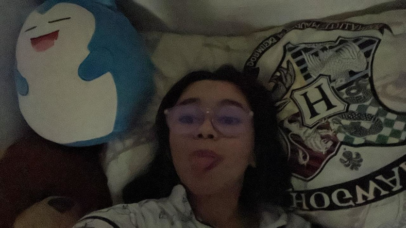

O COMEÇO
Bom, tudo começou no dia 14 e eu estava achando que seria uma viagem normal, não sabia que tava prestes a mudar o rumo da minha vida conhecendo uma mulher tão linda, engraçada e com seu jeito único, eu deveria agradecer muito por tudo acontecer do jeitinho que aconteceu.
Me senti muito feliz no beto carrero e mais ainda quando voce me mandou mensagem, pode-se dizer que foi um dia espetacular desde lá tem sido tudo muito bom para mim.
Eu penso em você quando acordo e quando vou dormir, e cada dia eu tenho a certeza que você é a amor da minha vida, o jeito que voce me trata é diferente de tudo que eu já vi, eu amo o jeito que você faz tudo, guardo suas curiosidades com muito carinho e eu me sinto feliz com cada 'eu te amo' que você fala.
Minha princesa, nesses 4 meses eu aprendi a amar verdadeiramente e absurdamente, você me conquistou por completo desde o primeiro dia com o seu sorriso e seu jeito distraída e brincalhona, você é uma mulher incrível e eu te admiro muito, eu respeito você e vejo todos os seus esforços pela dança e psicologia, eu amo ver isso, você pode ser você mesma comigo, completamente boboca e criança mas também uma mulher madura e sabe o que quer, fico abismado de como eu consegui ganhar na vida pra ter uma mulher linda, gostosa, inteligente, perfeita e tudo de bom ao meu lado, prometo te fazer muito feliz e prestar atenção em todos os detalhes sempre, quero estar com você nos melhores e nos piores momentos, você é o amor da minha vida e a mulher dos nossos filhos, não consigo me imaginar em um futuro sem você.
Confesso que no dia do aeroporto eu não esperava que fosse ser tudo naquela intensidade, quando eu falei que te amo é porque eu realmente já te amava desde aquele momento, não estava preparado pra tudo isso mas é como eu te falei, você me dá coragem todo dia e consegui me adaptar muito bem com nosso mundinho.
Amor, eu não paro de pensar no quanto você é a mulher perfeita para mim, você é especial demais e eu não vejo a hora de realizarmos todos os nossos sonhos juntos, quero passar a minha vida com você e quero isso pra sempre, estar longe de você é como estar longe de casa, estou pronto pra ser completamente seu e disposto a sempre cuidar de você.
Como eu conheço muito bem a minha princesa, sei que você está ansiosa pra ver o resto.